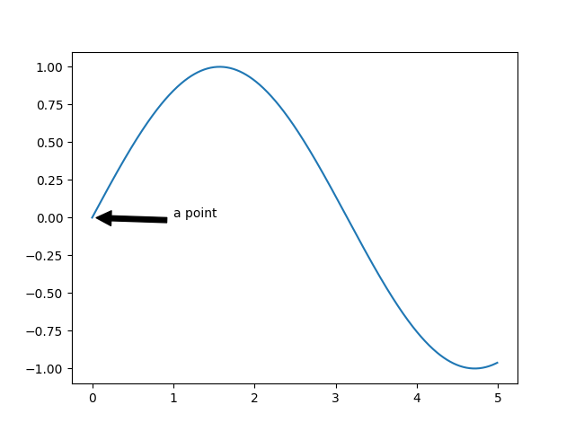
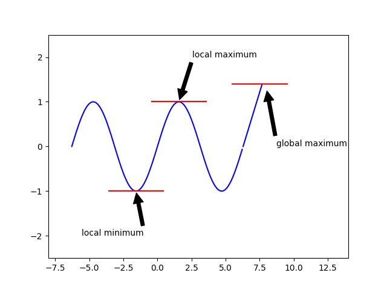

Simple one
import numpy as np
import pylab
x = np.arange(0.0, 5.0, 0.01)
y = np.sin(x)
pylab.plot(x, y)
pylab.annotate('a point', xy=(0, 0), xytext=(1, 0), arrowprops=dict(facecolor='black', shrink=0.05))
pylab.show()

Complex one
import numpy as np
import pylab
x = np.arange(- np.pi * 2, np.pi * 2, 0.1)
y = np.sin(x)
pylab.plot(x, y, color='blue')
def draw_horizontal_line(x, y, length):
unit = 0.1
line_x = np.arange(x-length, x+length+unit, unit)
line_y = np.linspace(y, y, num=len(line_x))
# line_y = np.array([y for i in range(len(line_x))])
pylab.plot(line_x, line_y, color='red')
# draw local maximum
draw_horizontal_line(np.pi/2, 1, 2)
pylab.annotate('local maximum', xy=(np.pi/2, 1), xytext=(np.pi/2+1, 2), arrowprops=dict(facecolor='black', shrink=0.05))
# draw local minimum
draw_horizontal_line(-np.pi/2, -1, 2)
pylab.annotate('local minimum', xy=(-np.pi/2, -1), xytext=(-np.pi/2-4, -2), arrowprops=dict(facecolor='black', shrink=0.05))
# draw global maximum
x = np.arange(6.0, 7.5, 0.1)
pylab.plot(x+(np.pi-3)*2, x-6, color='blue')
draw_horizontal_line(7.5, 7.4-6, 2)
pylab.annotate('global maximum', xy=(8.0, 7.3-6), xytext=(8.7, 0), arrowprops=dict(facecolor='black', shrink=0.05))
pylab.ylim(-2.5, 2.5)
pylab.xlim(-8, 14)
pylab.show()
